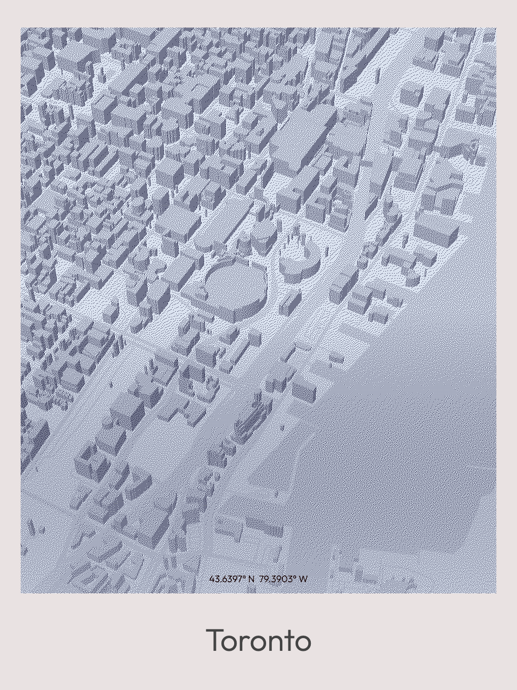
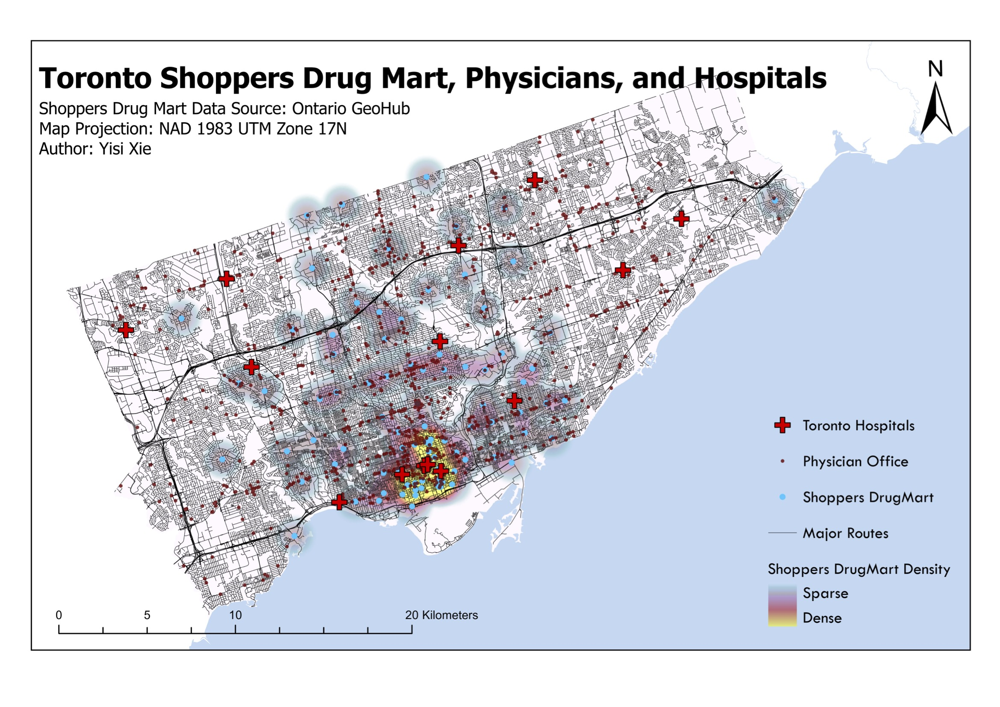

This project maps and analyses the spatial distribution of Shoppers Drug Mart pharmacies, physician offices, and hospitals across Toronto. Using Kernel Density Estimation, it examines how healthcare accessibility varies across the city's neighbourhoods.
Data were sourced from the Ontario GeoHub and projected in NAD 1983 UTM Zone 17N for accurate spatial measurement across the study area.
Data Source Ontario GeoHub
Projection NAD 1983 UTM Zone 17N
Tools ArcGIS Pro — XY Table To Point, Kernel Density
Course GGR372, University of Toronto


Geocoding Challenge
Standard address-based geocoding was not viable — the
ADDRESS_Toronto and physician datasets used
inconsistent address field formats, with no shared
address key between tables. The only reliable common
fields were X and Y coordinates.
The solution was to bypass geocoding entirely and use
ArcGIS Pro's XY Table To Point tool to
convert coordinate columns directly into point features.
Coordinate systems were then manually verified and map
extents confirmed to ensure all points fell within the
correct study area — a critical quality check when working
with raw coordinate data.
Density Analysis
Kernel Density Estimation was applied to the Shoppers Drug Mart point layer, generating a continuous density surface ranging from sparse to dense coverage. The resulting raster was overlaid with hospital locations (red cross symbols) and physician office points (black dots) to enable direct multi-layer spatial comparison across a single map frame.
The bandwidth parameter was calibrated to reflect a walkable service radius, ensuring the density surface captures neighbourhood-scale accessibility patterns rather than regional-scale aggregations.
Pharmacy distribution is relatively uniform across Toronto, with the highest density concentrated along Yonge Street in the city centre. Secondary clusters appear along Eglinton Avenue West, and stable coverage extends along both sides of Highway 401. This pattern suggests that Shoppers' site-selection strategy broadly reflects population distribution, resulting in comparatively equitable citywide accessibility.
Physician offices exhibit a pronounced corridor dependency, clustering along major arterials — Yonge, Bloor, Sheppard, Queen, and Eglinton. Communities located away from these corridors face substantially reduced access. This spatial pattern raises concerns about healthcare equity, as residents in peripheral neighbourhoods bear a disproportionate access burden.
Pharmacy accessibility consistently exceeds physician accessibility across Toronto. Outer-city communities face greater exposure to "medical desert" conditions in primary care — a gap that warrants attention in urban health equity planning.